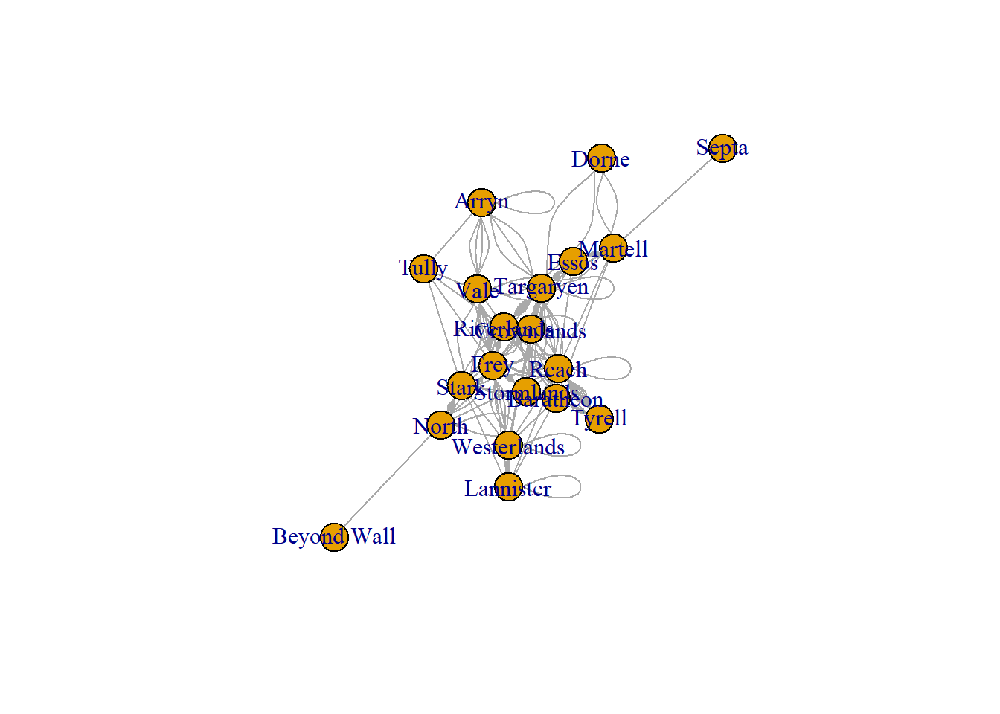

Code
knitr::opts_chunk$set(echo = TRUE)Cynthia Hester
February 22, 2023
read in a dataset
create a network object
# A tibble: 6 x 5
From To Type Notes Generation
<chr> <chr> <chr> <chr> <chr>
1 Targaryen Stark Married R+L=J Current
2 Baratheon Martell Engaged died Current
3 Baratheon Stark Engaged broken Current
4 Martell Essos Married <NA> Current
5 Martell Reach Affair <NA> Current
6 Martell Essos Affair <NA> Current # A tibble: 6 x 5
From To Type Notes Generation
<chr> <chr> <chr> <chr> <chr>
1 Targaryen Crownlands Married <NA> Past
2 Crownlands Stormlands Affair <NA> Past
3 Targaryen Crownlands Married <NA> Past
4 Targaryen Crownlands Married <NA> Past
5 Targaryen Targaryen Married <NA> Past
6 Targaryen Targaryen Married <NA> Past From To Type Notes
Length:255 Length:255 Length:255 Length:255
Class :character Class :character Class :character Class :character
Mode :character Mode :character Mode :character Mode :character
Generation
Length:255
Class :character
Mode :character Load the package igraph and create an igraph object (i.e. a graph or network) in the form of an edge list. The command may vary whether the data is given as a list of connections or an adjacency matrix.
1)Is the network directed or undirected; 2)weighted or unweighted; 3)unimodal or bipartite; 4)Can you plot it?
IGRAPH 246ae58 DN-- 20 255 --
+ attr: name (v/c), Type (e/c), Notes (e/c), Generation (e/c)
+ edges from 246ae58 (vertex names):
[1] Targaryen->Stark Baratheon->Martell Baratheon->Stark
[4] Martell ->Essos Martell ->Reach Martell ->Essos
[7] Martell ->Essos Martell ->Septa Martell ->Dorne
[10] Martell ->Targaryen Targaryen->Essos Targaryen->Essos
[13] Baratheon->Lannister Baratheon->Vale Baratheon->Riverlands
[16] Baratheon->Crownlands Baratheon->Reach Baratheon->Westerlands
[19] Baratheon->Crownlands Lannister->Lannister Baratheon->Reach
[22] Baratheon->Tyrell Tyrell ->Reach Tyrell ->Reach
+ ... omitted several edges
---
title: "Week 1 Challenge"
author: "Cynthia Hester"
description: "Loading Data and Creating a Network"
date: "02/22/2023"
format:
html:
toc: true
code-fold: true
code-copy: true
code-tools: true
# editor: visual
categories:
-hw1
-challenge_1
-Cynthia Hester
-GOT_Marriages
---
```{r}
#| label: setup
#| warning: false
knitr::opts_chunk$set(echo = TRUE)
```
### Load necessary libraries
```{r,include=FALSE}
library(igraph)
library(tidyr)
library(statnet)
library(readr)
```
#### Challenge Overview
1) read in a dataset
2) create a network object
#### Load in the GOT marriages data
```{r,results='hide'}
got_marriages <- read_csv("/Users/Bud/Desktop/DACSS_697E_Social Network Analysis_SP2023/Social_Networks_SP_2023/posts/_data/got/got_marriages.csv",show_col_types = FALSE)
View(got_marriages)
```
#### Gives us a look at the first five rows and last five rows of the data
```{r}
#first five rows of marriages data
head(got_marriages)
```
```{r}
#last five rows of marriages data
tail(got_marriages)
```
#### Provides summary of data
```{r}
#summary statistics of data
summary(got_marriages)
```
### Create a Network
Load the package `igraph` and create an `igraph` object (i.e. a graph or network) in the form of an edge list. The command may vary whether the data is given as a list of connections or an adjacency matrix.
1)Is the network directed or undirected; 2)weighted or unweighted; 3)unimodal or bipartite; 4)Can you plot it?
#### igraph object
```{r}
# object from the data frame
marriages.ig<- graph_from_data_frame(got_marriages)
```
#### IGRAPH Summary of GOT Marriages
```{r}
print(marriages.ig)
```
### Here we see that there are 20 **edges or ties** and that there are **255 nodes or vertices**. More fun facts to follow.
#### Is the network directed or undirected
```{r}
is_directed<-is_directed(marriages.ig)
if (is_directed) {
print("The network is directed.")
} else {
print("The network is not directed.")
}
```
#### Is the network weighted or unweighted?
```{r}
is_weighted<-is_weighted(marriages.ig)
if (is_weighted) {
print("The network is weighted.")
} else {
print("The network is not weighted.")
}
```
#### Is the network unimodal or bipartite?
```{r}
is_bipartite <- is_bipartite(marriages.ig)
if (is_bipartite) {
print("The network is bipartite.")
} else {
print("The network is not bipartite.")
}
```
### Plot of network
```{r}
# vertex and edge attributes
V(marriages.ig)$label <- V(marriages.ig)$name
E(marriages.ig)$arrow.size <- 0
# graph layout and plot
layout <- layout_with_fr(marriages.ig)
plot(marriages.ig, layout=layout)
```
#### The graph seems to accurately represent a network of GOT_Marriages, with each node representing a person.I used set the arrow size attribute of the edges to 0.This was done to indicate that this is an undirected graph. This made sense in the context of a network of marriages, as the relationship is typically bidirectional. Of note two pendant nodes are observed, **Septa and Beyond Wall**, which could considered points of interest.Upon some further research regarding the **pendant nodes**, I found that Septas are often present during weddings in the Faith of the Seven, as they are responsible for overseeing the religious aspects of the ceremony. And that Beyond the Wall, marriages and unions are often arranged in the Wildling culture, but they do not follow the same traditions as those in the Seven Kingdoms. I'm very rusty in my GOT lore, thus I am not sure how else these nodes would be meaningful aside from having low connectivity.